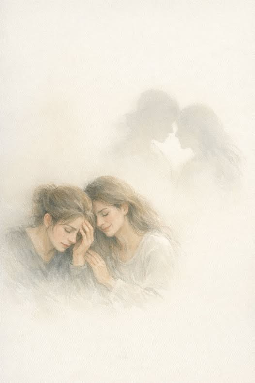

הכאב של אחר
הוא הכאב שלי,
כשהלב נפתח.
אנחה של אחר
מזיזה בי משהו.
הוא נוגע
כמו צל המחליק על הקיר,
שקט, אבל מורגש.
אני מרגישה את הרעד,
את המשקל שהוא סוחב.
הלב שלי מתרחב
כדי להכיל עוד לב,
ולהזכיר לי
שאני לא לבד בעולם הזה.